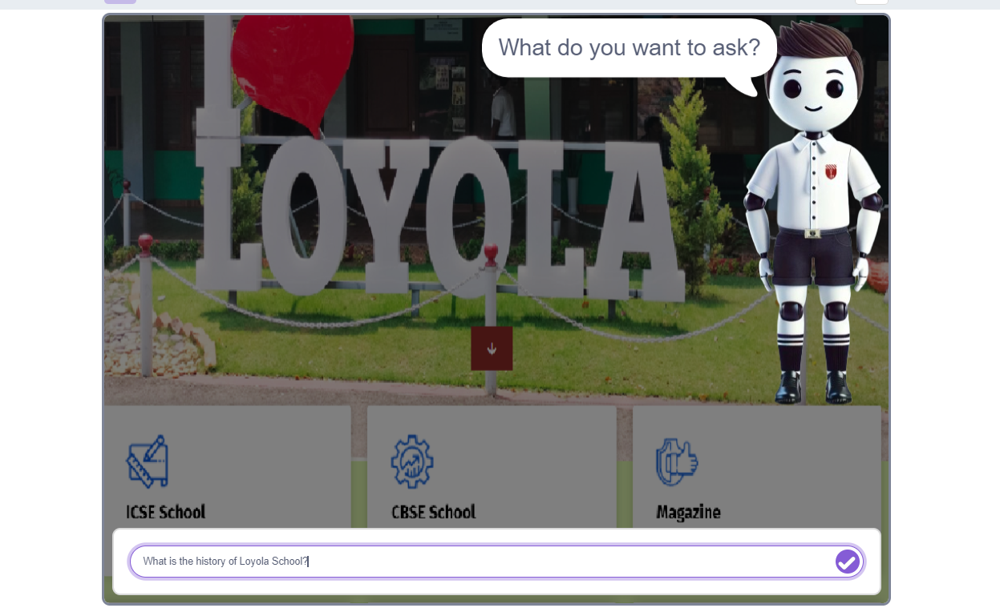
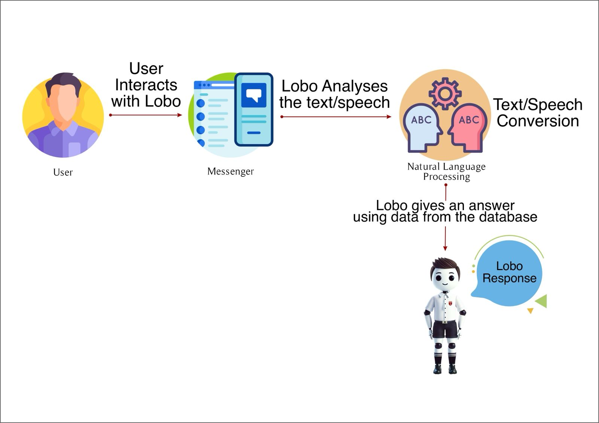

Getting Started With Artificial Intelligence Using Chatbots
What do you know about
chatbots? Try
to answer these questions.
What is a
chatbot?
How does a chatbot
work?
Why do chatbots
exist?
Have you interacted with
a chatbot?
Chatbots know more than
just letters and words. They can communicate with
humans.A diagram of
communication between humans and machines.
Language is a tool that is
used daily by countless humans across the globe. As a
society, people interact with each other as individuals
or as groups on a continuous basis. This interaction is
supported by language in its different forms.
Common interactions between
people can be automated. By using computer algorithms, or a series of
steps, a machine can be programmed to
participate in our human conversational
interactions. This program for communicating
with a digital device is what we call a
chatbot.
A chatbot is a
computer program that allows humans to interact
with a digital device as if they were
communicating with a real person. To better
understand how a chatbot works, you will
experiment with one. Let us start by talking to
our chatbot called
Lobo.
Materials
Computer
Browser (Chrome,
Firefox, Safari, Edge)
A chatbot (In our case, Lobo)
Activity 1: Talk To Lobo The Chatbot
Can you hold a
conversation with a computer program?
To begin, you will
interact with the Lobo chatbot so that you
better understand the interaction between people
and this type of computer program. Every
interaction relies on listening and
comprehending. Think of a typical
conversation you may have with a friend and
consider the following questions:
Is only one of
you talking or do both of you exchange
information?
Are the two of
you also listening?
Are the words
you hear creating thoughts in your
mind?
Are you coming
up with questions about the
subject?
These are questions
to consider when a person is talking to another
person. How can a conversation work when talking
to a chatbot?
What Should You Ask Lobo?
Try chatting with Lobo and ask any questios related to Loyola school. You can try the
questions posted below.
Silly: Do we have a nap time at Loyola School?
Informative: What is the history of Loyola School?
Data: How many teachers are there in Loyola School?
What will you ask the
chatbot, Lobo? Screenshot of the application
Think about these
questions as you chat with Lobo:
How do you feel
interacting with Lobo?
Does the conversation
flow easily, or seem disconnected and
difficult?
How can Lobo
understand your questions?
Where do you think the
answers that Lobo provides are coming from? Are
the answers pre-made and stored somewhere? Are
the answers constructed by the program as you
ask?
Do you think that
creating this type of conversation is easy or
hard? Why?
How Does It
Work?
When searching for
answers to your questions, Lobo has a "Knowledge
Base" of information that it refers to. It can combine
this information in logical ways to answer
questions. For example, Lobo’s intelligence includes
the ability to reason with specific objects. If
someone asks “What is the admission procedure to Loyola School?” Lobo looks up
the properties for ‘admission.’ It finds the details of
‘admissions’ and replies in detail.

Working of Lobo
Simple Versus Advanced AI
A simple rule based systems
versus an advanced machine learning system. Image
created in Canva in collaboration
with Steamlabs.
Simple Rule-Based
Chatbots
Rule-based chatbots like
Vera can interact with humans using predetermined
questions, answers, and statements. This system
needs developers to code all the necessary message
processing and interaction logic by hand. This
method can work quite well, but the interaction with
the chatbot feels unnatural and limited. The
developer coding the application can only predict
and provide so many different options to the
program.
How Does AI Do Its
Job?
To solve the problem of
not having enough choices and complexity, computer
scientists created a newer and more powerful tool,
Artificial Intelligence (AI). Machine
learning is a
branch of AI and can be defined as the capability of
a machine to learn from examples. For this process,
the developer needs a lot of data (i.e.
conversations) to support the machine to identify
the best answer to a given question.
Both Kuki and Vera are
examples of chatbots that use AI machine learning to
help them understand what the user is
asking.
The graphic above shows the
process of AI at work. As you can see, it is a
continuous loop that takes data, processes it,
produces a result, and in most cases provides that
result to the system to improve its learning.
Source: Digital
Moment. Used with
permission.
AI starts and is defined
by data. These systems require
large quantities of information to help the machine
learn patterns and produce results that satisfy the
requirements of the developers.
The data provided to the
system is processed by a learning
algorithm that
extracts patterns and learns from the data provided.
The system creates a result, which varies depending
on the type of AI system being utilized. The loop is
closed by taking the result and feeding it back to
the learning algorithm for further processing or
learning.
The most common types of
results are:
Predictions,
eg. the weather, customer behavior, and
engagement.
Generation,
eg. creating text, an image, or a
song.
Analysis,
eg. checking for product quality in a production
line.